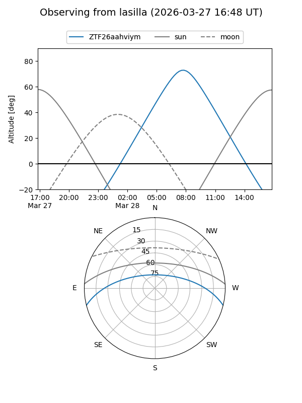
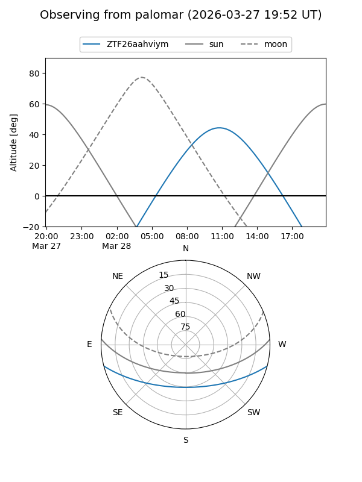

ZTF26aahviym
Target ZTF26aahviym at 2026-03-28 12:40
Aliases and brokers:
FINK: link
Lasair: link
ALeRCE: link
alt names
ZTF26aahviym (ztf,fink_ztf)
Coordinates:
equatorial (ra, dec) = 230.2132,-12.16252
equatorial (HMS+DMS) = 15:20:51.17,-12:09:45.08
galactic (l, b) = (350.5189,+36.54878)
Flags:
Photometry:
last ztfg=17.87
1 ztfg detections
Lightcurve
Visibility


Additional plots